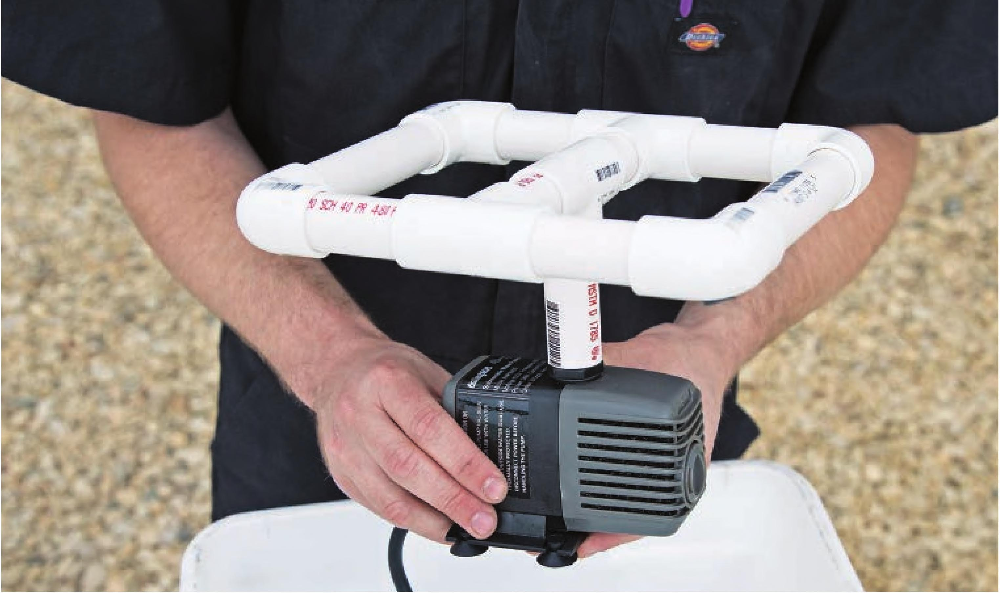
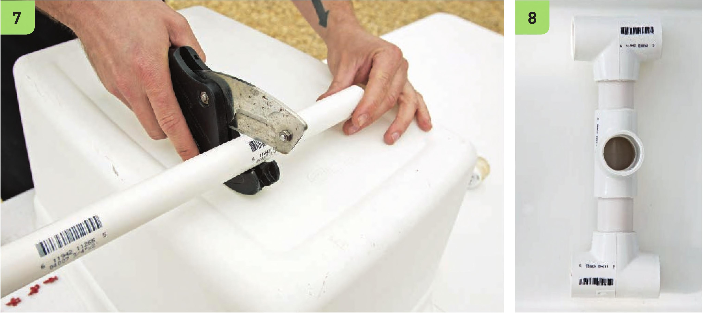

Assemble the Irrigation System This irrigation design (pictured above) can be modified for a variety of reservoir sizes by adjusting the Length of the PVC segments and moving the placement of the 360-degree misters. 7 The exact Lengths of the PVC segments will depend on the reservoir and specific %'* elbows and tees used. Do not glue any of the components together until the entire irrigation system has been test-fitted. Only glue the components together once they fit well without glue. 8 Build the center part of the irrigation manifold first. It will need to be compact enough to fit within the width of the reservoir but there should be enough space between the tees so an aeroponic mister can be installed. HYDROPONIC GROWING SYSTEMS 1 1 1

